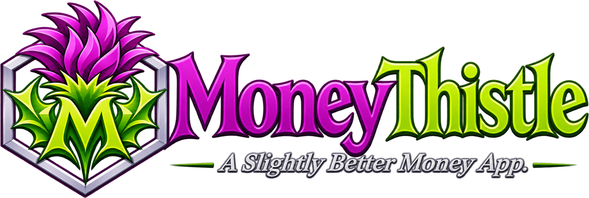
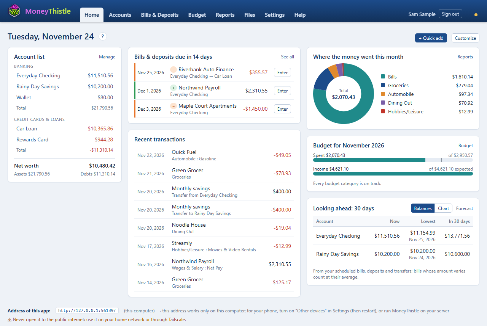
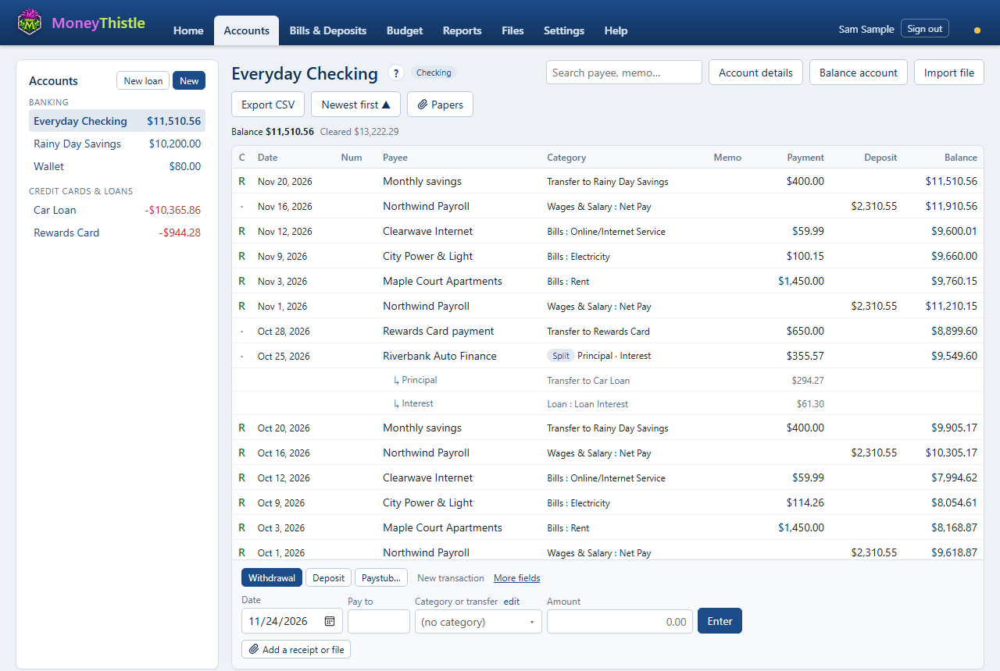
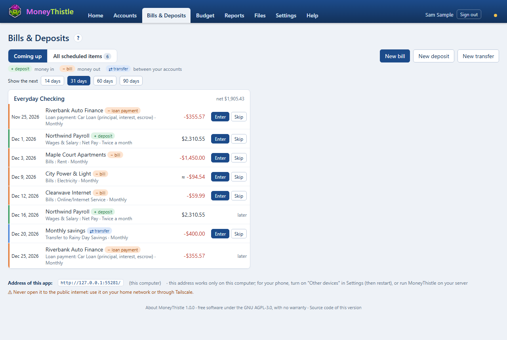
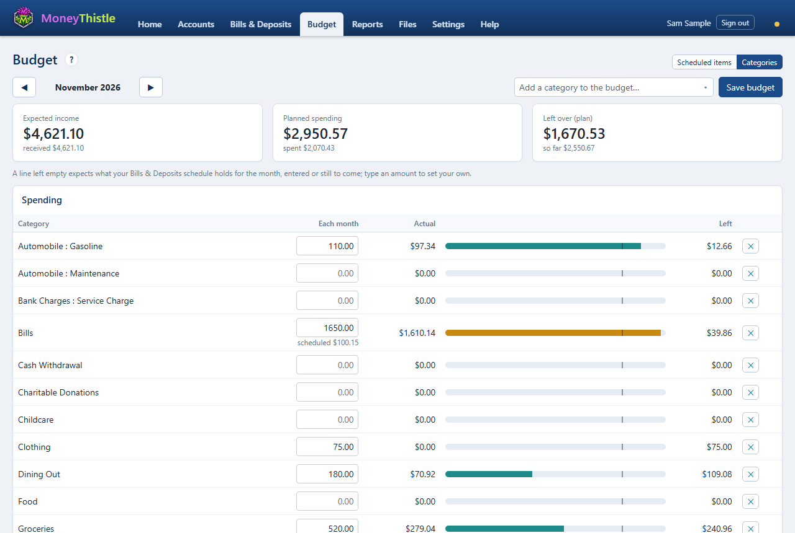
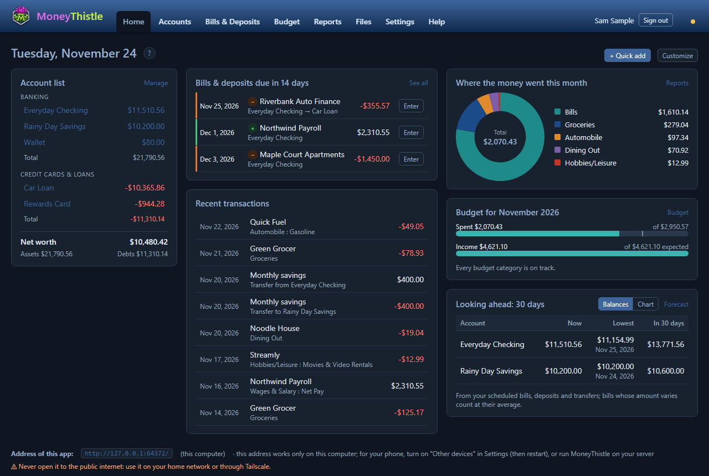

Click anywhere or press Esc to close

Também em português: a mesma apresentação, com o aplicativo em português.

A simple personal money manager that opens in your web browser. It runs as a program on Windows, as a container on Docker or Unraid, and on macOS or Linux with Python. Accounts and registers, Bills & Deposits, paychecks and paystubs, budgets, reports and a year-end tax report, receipts, and automatic backups to a folder and to Nextcloud (or any WebDAV server).
No bank connection. You type transactions in, or import the files your bank lets you download. In English, French, Spanish and Portuguese.
It is built for household money, shared between the people in a home, and at most a very simple sole proprietorship kept in its own environment. It is not business bookkeeping: no invoices, receivables or payables, sales tax, payroll or double-entry books.
Most money programs forecast a variable bill at a fixed amount you guess, or at whatever it happened to be last month. MoneyThistle can base a scheduled transaction on its own history: the expected amount is the average of up to the last N recorded amounts, 12 by default. That averaged amount is what the forecast uses, day by day, so the picture of your future balance reflects what a bill actually tends to cost.
That combination came from Microsoft Money, which has been abandoned for years. It has not turned up in the other free and open source money programs we checked.
Install it locally and open it only on that machine, at localhost. Nothing leaves the computer.
Run it on one machine and reach it from others on your LAN, with each person signing in with their own name and password.
Run it on a server that is on around the clock, on Unraid or Docker, and reach it from anywhere through a private VPN such as Tailscale.
Click any screenshot to see it larger.




Made-up sample data in every screenshot. A new install offers "Try it with sample data", and "Start fresh" clears it when you are ready.
MoneyThistle reads QIF exports from Microsoft Money, Quicken, Moneydance, KMyMoney, HomeBank, Money Manager Ex and Banktivity, and CSV exports from YNAB, GnuCash, Actual Budget, Mint and Firefly III, or any CSV with an Account column. You see a preview first, and choose for each account whether it becomes a new account, goes into an existing one, or is left out.
Automatic backups go to a local folder and, if you set it up, to Nextcloud or another WebDAV server. Backups hold everything, all environments and sign-ins, in one file, and any backup can be restored from the Backups page. That includes starting over on a new computer or server from a backup alone.
MoneyThistle is "vibe coded". Nearly all of its code, screens, help and tests were written by an AI (Anthropic's Claude) from plain-language requests. Its human maintainer decided what it should do, used and tested every feature, and has not reviewed the code line by line. It has automated tests and everyday use behind it, but no professional code review or security audit. Keep backups, keep it off the public internet, and reviews and fixes are welcome.
MoneyThistle is free and open source under the GNU AGPL-3.0. Use it, change it and share it. If you offer a changed version to others, including as a hosted website, share your changes too. The MoneyThistle name, logo and wordmark identify this project, so a changed version you share should have its own name and look. Saying it is "based on MoneyThistle" is welcome.
Click anywhere or press Esc to close